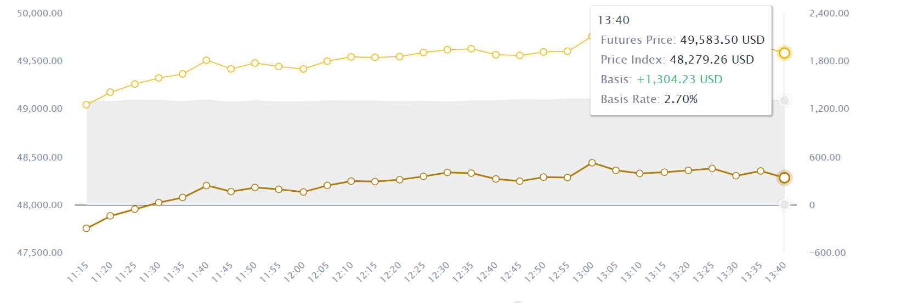
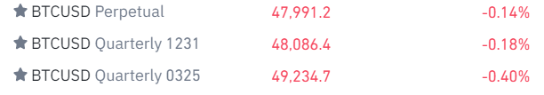

BTC strategy visualization
2021-12-10
Chapter 1 Introduction
The future markets in Cryptocurrencies are notorious for high volatility. Finding a trading strategy stable and profitable in the cryptomarket is a hard task. In this project, we introduce a trading strategy called Basis Trading Strategy. It is not only a practical way to trade (not a high frequency trading strategy), but also profitable.
1.1 What is basis?
Basis is the difference between the spot price (just the coin price) of an asset and its futures price. In this project, we defined the basis as the ratio of price difference between perpetual swap and future swap. The equation of basis is B = (F - S) / S. Here is the historic basis of ETH price between perpetual swap and future swap. From the figure below, we can see the current basis is about 2.7% 
1.2 Future market in Crypto
There are many Derivative Products in Crypto Market. We only use Perpetual Swap and Future Swap to design trading strategy.
1.2.1 What is perpetual swap and future swap?
A Futures swap is a futures contract that allows a trader to buy or sell the underlying asset at a predetermined price before a specified period. In other words, futures contracts have a limited lifespan and will expire based on their respective calendar cycle. In simple terms, you can buy the future swaps just like buy cryptocurrencies, but you must sell the contracts before their lifespan. An important characteristic of future swap is that at the expiry date, the price of future swap equal to the price of spot market .
Perpetual swap is another kind of future contracts, as the name suggests, do not have an expiration date. The exchange has mechanism call funding rate to guarantee that the price difference between perpetual swap and future swap is within a reasonable range.
1.2.2 What is Funding Rate?
perpetual futures contracts never settle in the traditional sense, exchanges need a mechanism to ensure that futures prices and index prices converge on a regular basis. This mechanism is also known as Funding Rate/Fees. When the funding rate is positive, the long position holders will pay the short position holders. When the funding rate is negative, the short position holders will pay the long position holders. The value of the funding rate represents how much percent you will pay or receive.
1.2.3 Why future markets?
In future markets, you can easily open high leverage. Future markets allow people open short position and long position in same time. However, two important points must be pay attention to open high leverage are, the future swap is usually more expensive than spot, and the perpetual swap has an unpredictable fee called “funding rate”. Here is the official document to introduce the future swap, perpetual swap and funding rate. To fully understand how the future market works, you have to read this document. https://www.binance.com/en/support/faq/d2a1afd5f829455c9ded23f0ca561a40
1.2.4 Example:
Here is how future market looks like in crypto! 
The symbol “BTCUSD Quarterly 0325” represents the future swap which would expire in 03/25/2022. The “ETHUSD perpetual” is the perpetual swap. In this time, the basis will be calculated as (49234.7 - 47991.2) / 47991.2 = 0.026%.
1.3 How to trade by basis?? Hedge!
It is pretty obvious that you can easily design a risk free trading strategy based on the basis. For example, you can just long the spots and short the futures.
1.3.1 Explaination:
\(BTCUSD Quarterly0325 price = 49234.7$\)
\(BTC price= 47991.2$\)You can just short 1 ETH in ETHUSD Quarterly0325 contract, and also buy 1 ETH in Spot market.
We know that on March 25 2022,
ETHUSD Quarterly0325 price = ETH price.
Let P is the ETH price on March 25 2022.
The profit/loss form short ETHUSD Quarterly0325 = 49234.7$ - X
The profit/loss form long ETHUSD = X - 47991.2$
The total profit/loss = 49234.7$ - X + X - 47991.2$ = 1243.5$
It takes more than 3 month to make 1243.5 / (49234.7 + 47991.2) = 1.28% risk free return. However, the return is too little to trade on the real market.
1.3.2 Main Idea
The main idea of our trading strategy is to open the position when the basis reach the bottom or top and make profit when the basis recovered to the regular level. We will trade entirely on the future market and high leverage to expand the profit. For example, if there is no funding rate, we can open the short basis position with 100 leverages and get 160% return in 3 months. However, the accumulation of funding rate needs to be considered carefully. We will lose everything if opening a position without any pre-calculate.
The good news is that our project tells you how to calculate your maxium loss, pointed out the good time to open the position, and provide backtest algorithm to verify our strategy. We also used historic price data sets and fundamental data sets to provide the insights of the basis.